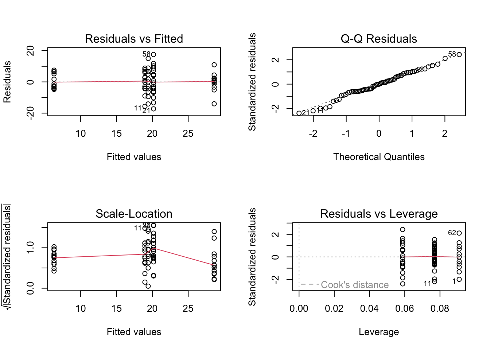
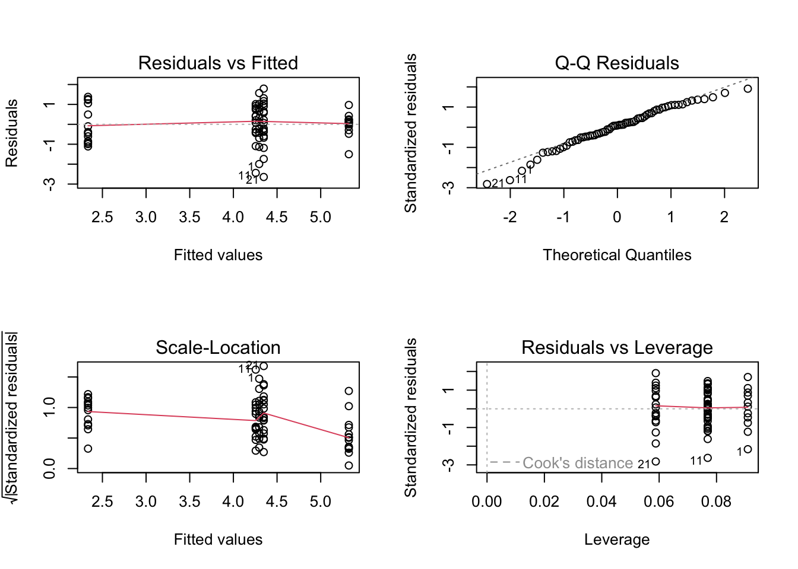
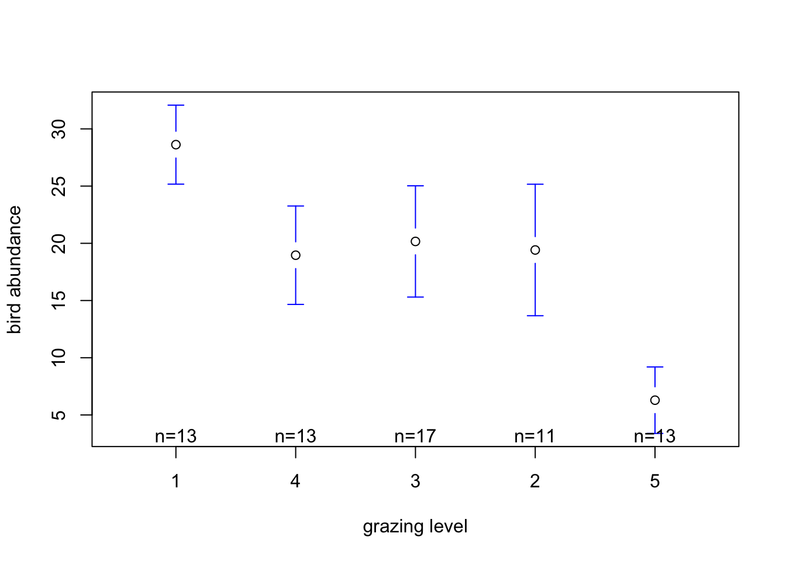
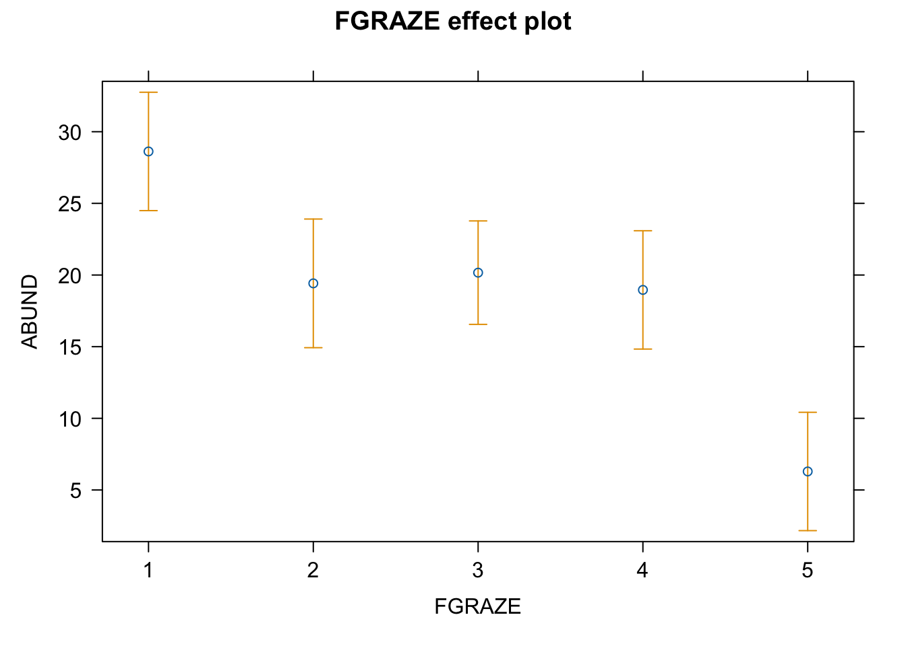

Exercise Solutions
Exercise: Linear model with single categorical explanatory variable
1. As in previous exercises, either create a new R script (perhaps
call it linear_model_2) or continue with your previous R script in your
RStudio Project. Again, make sure you include any metadata you feel is
appropriate (title, description of task, date of creation etc) and don’t
forget to comment out your metadata with a # at the
beginning of the line.
2. Import the data file ‘loyn.txt’ into R and take a look at the
structure of this dataframe using the str() function. In
this exercise you will investigate whether the abundance of birds
(ABUND) is different in areas with different grazing
intensities (GRAZE). Remember, the GRAZE
variable is an index of livestock grazing intensity. Level 1 = low
grazing intensity and level 5 = high grazing intensity.
loyn <- read.table("./data/loyn.txt", header = TRUE,
stringsAsFactors = TRUE)
str(loyn)
## 'data.frame': 67 obs. of 8 variables:
## $ SITE : int 1 60 2 3 61 4 5 6 7 8 ...
## $ ABUND : num 5.3 10 2 1.5 13 17.1 13.8 14.1 3.8 2.2 ...
## $ AREA : num 0.1 0.2 0.5 0.5 0.6 1 1 1 1 1 ...
## $ DIST : int 39 142 234 104 191 66 246 234 467 284 ...
## $ LDIST : int 39 142 234 311 357 66 246 285 467 1829 ...
## $ YR.ISOL: int 1968 1961 1920 1900 1957 1966 1918 1965 1955 1920 ...
## $ GRAZE : int 2 2 5 5 2 3 5 3 5 5 ...
## $ ALT : int 160 180 60 140 185 160 140 130 90 60 ...
3. As we discussed in the graphical data exploration exercise the
GRAZE variable was originally coded as a numeric (i.e. 1,
2, 3, 4, 5). In this exercise we actually want to treat
GRAZE as a categorical variable with five levels (aka a
factor). So the first thing we need to do is create a new variable in
the loyn dataframe called FGRAZE in which we store the
GRAZE variable coerced to be a categorical variable with
the factor() function (you can also use the
as.factor() function if you prefer).
# create factor GRAZE as it was originally coded as an integer
loyn$FGRAZE <- factor(loyn$GRAZE)
# check this
class(loyn$FGRAZE)
## [1] "factor"
4. Explore any potential differences in bird abundance between each
level of FGRAZE graphically using an appropriate plot
(hint: a boxplot might be useful here). How would you interpret this
plot? What might you expect to see in your analysis? Write your
predictions in your R script as a comment. What is the mean number of
birds for each level of FGRAZE?

# mean bird abundance for each level of FGRAZE
tapply(loyn$ABUND, loyn$FGRAZE, mean, na.rm = TRUE)
## 1 2 3 4 5
## 28.623077 19.418182 20.164706 18.961538 6.292308
# it looks from this plot and the table of means that the bird abundance is lowest for FGRAZE level 5 and
# highest for level 1. The bird abundance for levels 2, 3 and 4 all look similar.
# so in terms of differences in ABUND between groups we might expect FGRAZE level 5 to be different from
# the other grazing intensity group and possibly FGRAZE level 1 to be different from graze level 2,3 and 4
# but this is not particularly clear. We might also expect there to be no differences between grazing
# levels 2,3 and 4.
5. Fit an appropriate linear model in R to explain the variation in
the response variable, ABUND, with the explanatory variable
FGRAZE. Remember to use the data = argument.
Assign this linear model to an appropriately named object
(birds.lm if your imagination fails you!).
6. Produce the ANOVA table using the anova() function on
the model object. What null hypothesis is being tested? Do you reject or
fail to reject the null hypothesis? What summary statistics would you
report? Summarise in your R script as a comment.
anova(birds.lm)
## Analysis of Variance Table
##
## Response: ABUND
## Df Sum Sq Mean Sq F value Pr(>F)
## FGRAZE 4 3324.2 831.06 14.985 1.272e-08 ***
## Residuals 62 3438.6 55.46
## ---
## Signif. codes: 0 '***' 0.001 '**' 0.01 '*' 0.05 '.' 0.1 ' ' 1
# null hypothesis : There is no difference in the mean bird abundance between the
# five levels of grazing.
# the p value is very small therefore reject this null hypothesis. In other words
# there is a difference in the mean bird abundance between grazing intensity levels.
# for a report you might write something like:
# there was a significant difference in the mean abundance of birds between the five levels
# of grazing intensity (F_4,62 = 14.98, p < 0.0001)
7. Use the summary() function on the model object to
produce the table of parameter estimates (remember these are called
coefficients in R). Using this output what is the estimate of the
intercept and what does this represent? What is the null hypothesis
associated with the intercept? do you reject or fail to reject this
hypothesis? Next we move onto the the FGRAZE2 parameter,
how do you interpret this parameter? (remember they are contrasts).
Again, what is the null hypothesis associated with the
FGRAZE2 parameter? do you reject or fail to reject this
hypothesis? Repeat this interpretation for the FGRAZE3,
FGRAZE4 and FGRAZE5 parameters. Summarise this
as a comment in your R script.
summary(birds.lm)
##
## Call:
## lm(formula = ABUND ~ FGRAZE, data = loyn)
##
## Residuals:
## Min 1Q Median 3Q Max
## -17.2647 -4.3269 -0.0182 5.0948 17.5353
##
## Coefficients:
## Estimate Std. Error t value Pr(>|t|)
## (Intercept) 28.623 2.065 13.858 < 2e-16 ***
## FGRAZE2 -9.205 3.051 -3.017 0.00370 **
## FGRAZE3 -8.458 2.744 -3.083 0.00306 **
## FGRAZE4 -9.662 2.921 -3.308 0.00157 **
## FGRAZE5 -22.331 2.921 -7.645 1.64e-10 ***
## ---
## Signif. codes: 0 '***' 0.001 '**' 0.01 '*' 0.05 '.' 0.1 ' ' 1
##
## Residual standard error: 7.447 on 62 degrees of freedom
## Multiple R-squared: 0.4915, Adjusted R-squared: 0.4587
## F-statistic: 14.98 on 4 and 62 DF, p-value: 1.272e-08
# Here the intercept (baseline) is the mean abundance of birds for FGRAZE level 1.
# the null hypothesis for the intercept is that the intercept = 0.
# As the p value (p < 2e-16) is very small we reject this null hypothesis and conclude that the
# intercept is significantly different from 0. However, from a biological perspective this
# is not a particularly informative hypothesis to test.
# the remaining estimates are differences (contrasts) between each level and the
# baseline. For example the FGRAZE2 estimate is - 9.2 and therefore there are 9.2 fewer
# birds on average in graze level 2 compared to graze level 1. This difference is
# significantly different from zero (p = 0.003).
# The difference between graze level 3 (FGRAZE3) and graze level 1 (intercept) is
# -8.45 (8.45 fewer birds in graze 3 compared to graze 1). This difference is significantly
# different from 0 (p = 0.003) and therefore the mean abundance of birds in graze level 1 is
# significantly different from graze level 1.
# The difference between graze level 4 (FGRAZE4) and graze level 1 (intercept) is
# -9.66 (9.66 fewer birds in graze 4 compared to graze 1). This difference is significantly
# different from 0 (p = 0.001) and therefore the mean abundance of birds in graze level 1 is
# significantly different from graze level 4.
# The difference between graze level 5 (FGRAZE5) and graze level 1 (intercept) is
# -22.33 (22.33 fewer birds in graze 5 compared to graze 1). This difference is significantly
# different from 0 (p = 1.64e-10) and therefore the mean abundance of birds in graze level 1 is
# significantly different from graze level 5.
8. Now that you have interpreted all the contrasts with
FGRAZE level 1, reset the intercept to FGRAZE
level 2 using the relevel() function, refit the model,
produce the new table of parameter estimates using the
summary() function again and interpret. Repeat this for
FGRAZE levels 3, 4 and 5. Can you summarise which levels of
FGRAZE are different from each other?
# Set FGRAZE level 2 to be the intercept
loyn$FGRAZE <- relevel(loyn$FGRAZE, ref = "2")
birds.lm2 <- lm(ABUND ~ FGRAZE, data = loyn)
summary(birds.lm2)
##
## Call:
## lm(formula = ABUND ~ FGRAZE, data = loyn)
##
## Residuals:
## Min 1Q Median 3Q Max
## -17.2647 -4.3269 -0.0182 5.0948 17.5353
##
## Coefficients:
## Estimate Std. Error t value Pr(>|t|)
## (Intercept) 19.4182 2.2454 8.648 3.00e-12 ***
## FGRAZE1 9.2049 3.0509 3.017 0.0037 **
## FGRAZE3 0.7465 2.8817 0.259 0.7965
## FGRAZE4 -0.4566 3.0509 -0.150 0.8815
## FGRAZE5 -13.1259 3.0509 -4.302 6.11e-05 ***
## ---
## Signif. codes: 0 '***' 0.001 '**' 0.01 '*' 0.05 '.' 0.1 ' ' 1
##
## Residual standard error: 7.447 on 62 degrees of freedom
## Multiple R-squared: 0.4915, Adjusted R-squared: 0.4587
## F-statistic: 14.98 on 4 and 62 DF, p-value: 1.272e-08
# The intercept is now FGRAZE level 2, we can now compare between levels '2 and 3', '2 and 4', and '2 and 5'
# Also note that the rest of the model output (R^2, F, DF etc) is the same as the previous model (i.e. its
# the same model we have just changed the intercept and therefore the contrasts).
loyn$FGRAZE <- relevel(loyn$FGRAZE, ref = "3")
birds.lm3 <- lm(ABUND ~ FGRAZE, data = loyn)
summary(birds.lm3)
##
## Call:
## lm(formula = ABUND ~ FGRAZE, data = loyn)
##
## Residuals:
## Min 1Q Median 3Q Max
## -17.2647 -4.3269 -0.0182 5.0948 17.5353
##
## Coefficients:
## Estimate Std. Error t value Pr(>|t|)
## (Intercept) 20.1647 1.8062 11.164 < 2e-16 ***
## FGRAZE2 -0.7465 2.8817 -0.259 0.79645
## FGRAZE1 8.4584 2.7438 3.083 0.00306 **
## FGRAZE4 -1.2032 2.7438 -0.438 0.66255
## FGRAZE5 -13.8724 2.7438 -5.056 4.06e-06 ***
## ---
## Signif. codes: 0 '***' 0.001 '**' 0.01 '*' 0.05 '.' 0.1 ' ' 1
##
## Residual standard error: 7.447 on 62 degrees of freedom
## Multiple R-squared: 0.4915, Adjusted R-squared: 0.4587
## F-statistic: 14.98 on 4 and 62 DF, p-value: 1.272e-08
# The intercept is now FGRAZE level 3, we can now compare between levels '3 and 4', 'and 3 and 5'
loyn$FGRAZE <- relevel(loyn$FGRAZE, ref = "4")
birds.lm4 <- lm(ABUND ~ FGRAZE, data = loyn)
summary(birds.lm4)
##
## Call:
## lm(formula = ABUND ~ FGRAZE, data = loyn)
##
## Residuals:
## Min 1Q Median 3Q Max
## -17.2647 -4.3269 -0.0182 5.0948 17.5353
##
## Coefficients:
## Estimate Std. Error t value Pr(>|t|)
## (Intercept) 18.9615 2.0655 9.180 3.65e-13 ***
## FGRAZE3 1.2032 2.7438 0.438 0.66255
## FGRAZE2 0.4566 3.0509 0.150 0.88151
## FGRAZE1 9.6615 2.9210 3.308 0.00157 **
## FGRAZE5 -12.6692 2.9210 -4.337 5.41e-05 ***
## ---
## Signif. codes: 0 '***' 0.001 '**' 0.01 '*' 0.05 '.' 0.1 ' ' 1
##
## Residual standard error: 7.447 on 62 degrees of freedom
## Multiple R-squared: 0.4915, Adjusted R-squared: 0.4587
## F-statistic: 14.98 on 4 and 62 DF, p-value: 1.272e-08
# The intercept is now FGRAZE level 4, we can now compare between levels '4 and 5'
9. Staying with the summary table of parameter estimates, how much of
the variation in bird abundance does the explanatory variable
FGRAZE explain?
# The multiple R-squared value is 0.491 and therefore 49.1% of
# the variation in ABUND is explained by FGRAZE
10. Now onto a really important part of the model fitting process.
Let’s check the assumptions of your linear model by creating plots of
the residuals from the model. Remember, you can easily create these
plots by using the plot() function on your model object.
Also remember that if you want to see all plots at once then you should
split your plotting device into 2 rows and 2 columns using the
par() function before you create the plots. Check each of
the assumptions using these plots and report whether your model meets
these assumptions in your R script.
# first split the plotting device into 2 rows and 2 columns
par(mfrow = c(2,2))
# now create the residuals plots
plot(birds.lm)
# To test the normality of residuals assumption we use the Normal Q-Q plot. Although the majority of the residuals
# lie along the 1:1 line there are five residuals which are all below the line resulting in reasonably substantial
# negative residuals. This suggest that the model does not fit these observation very well.
# Looking at the homogeneity of variance assumption (Residuals vs Fitted and Scale-Location plot) you can see the
# five columns of residuals corresponding to the fitted values for the five grazing levels. Again, things don't look
# great. The spread for the lower fitted values (left side of the plot) is much narrower when compared to the other groups.
# This suggests that the homogeneity of variance assumption is not met (i.e. the variances are not the same). The same cluster
# of negative residuals we spotted in the Normal Q-Q plot also appears in the Residuals vs Fitted plot suggesting that it is
# these residuals that are responsible.
# The only real good news is that there doesn't appear to be any influential or unusual residuals as indicated in the
# Residuals vs Leverage plot.
# So what to do? You could go back and check the original field notebook data to see if a
# transcribing mistake has been made (seems unlikely and you dont have this luxury anyway).
# You could also try applying a transformation (log or square root) on the ABUND variable, refit the model and
# see if this improves things.
# for example
loyn$ABUND.SQRT <- sqrt(loyn$ABUND)
birds.lm.sqrt <- lm(ABUND.SQRT ~ FGRAZE, data = loyn)
par(mfrow = c(2,2))
plot(birds.lm.sqrt)
# Sadly this doesn't seemed to have improved things!
# Or finally, you can relax the assumption of equal variance and estimate a separate variance for each group using
# generalised least squares. This is not something we will do on this course but will cover in a more advanced statistics course!
11. This is an optional question and really just for information.
I’ll give you the code in the solutions so don’t overly stress about
this! Use Google (yep, this is OK!) to figure out how to plot your
fitted values and 95% confidence intervals. Try Googling the
gplots package or the effects package.
Alternatively, have a go at using our old trusty predict()
function to calculate the fitted values and standard error (this time
you will need to use either the segments() or
arrows() function to add these to the plot instead of the
lines() function we used before). Check out the solutions
code if you’re thoroughly confused!
# Using the gplots package, you may need to install this package first
# install.packages('gplots')
loyn$FGRAZE <- relevel(loyn$FGRAZE, ref = "1")
library(gplots)
plotmeans(ABUND ~ FGRAZE, xlab = "grazing level",
ylab = "bird abundance", data = loyn, connect = FALSE)
# Using the effects package, you may need to install this package first
# install.packages('effects')
library(effects)
loyn.effects <- allEffects(birds.lm)
plot(loyn.effects,"FGRAZE", lty = 0)
# and finally using old faithful the predict function and base R graphics
# with the segments function
my.data <- data.frame(FGRAZE = c("1", "2", "3", "4", "5"))
pred.vals <- predict(birds.lm, newdata = my.data, se.fit = TRUE)
# now plot these values
plot(1:5, seq(0, 50, length=5), type = "n", xlab = "Graze intensity", ylab = "Bird Abundance")
points(1:5, pred.vals$fit)
segments(1:5, pred.vals$fit, 1:5, pred.vals$fit - 1.96 * pred.vals$se.fit)
segments(1:5, pred.vals$fit, 1:5, pred.vals$fit + 1.96 * pred.vals$se.fit)
# using old faithful the predict function and base R graphics
# with the arrows function
my.data <- data.frame(FGRAZE = c("1", "2", "3", "4", "5"))
pred.vals <- predict(birds.lm, newdata = my.data, se.fit = TRUE)
# now plot these values
plot(1:5, seq(0, 50, length=5), type = "n", xlab = "Graze intensity level", ylab = "Bird Abundance")
arrows(1:5, pred.vals$fit, 1:5, pred.vals$fit - 1.96 * pred.vals$se.fit,
angle = 90, code = 2, length = 0.05, col = "blue")
arrows(1:5, pred.vals$fit, 1:5, pred.vals$fit + 1.96 * pred.vals$se.fit,
angle = 90, code = 2, length = 0.05, col = "blue")
points(1:5, pred.vals$fit, pch = 16)
End of the linear model with single categorical explanatory variable exercise